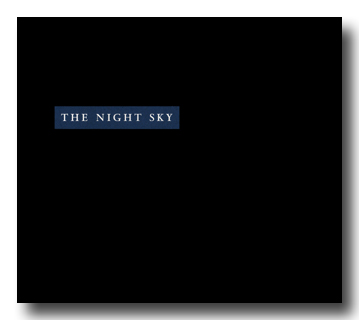
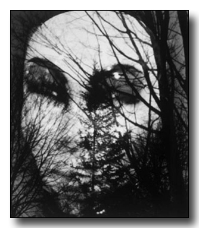
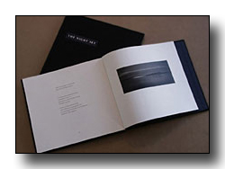

|  |
|  |
The Night Sky, 2002 limited edition
with photographs by Gaylen Morgan
Story Line Press
72 pages; ISBN: 1-58654-017-3
Available for purchase from gaylenmorgan@gaylenmorgan.com.
Click here to read selections from this book.

The book's type is set in Spectrum. Designed by Carolyn Eckert, Northampton, Massachusetts. Production coordinated by Susan Medlicott, Whately, Massachusetts. Printed by Stamperia Valdonega, Verona, Italy.
"The range and pleasure of Frederick Morgan's poetry, and the sheer beauty of the Morgan collaboration, puts to rest the notion that traditional books are irrelevant. This book should be part of everyone's library." —Michael Peich, Philadephia Inquirer
"A gorgeous book—the combination of poems and pictures is striking and apt in every case." —Mark Jarman